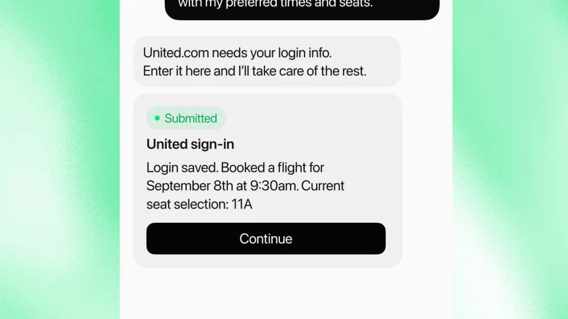
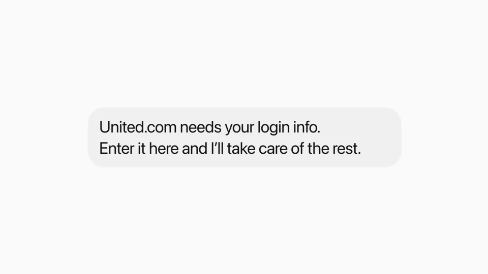
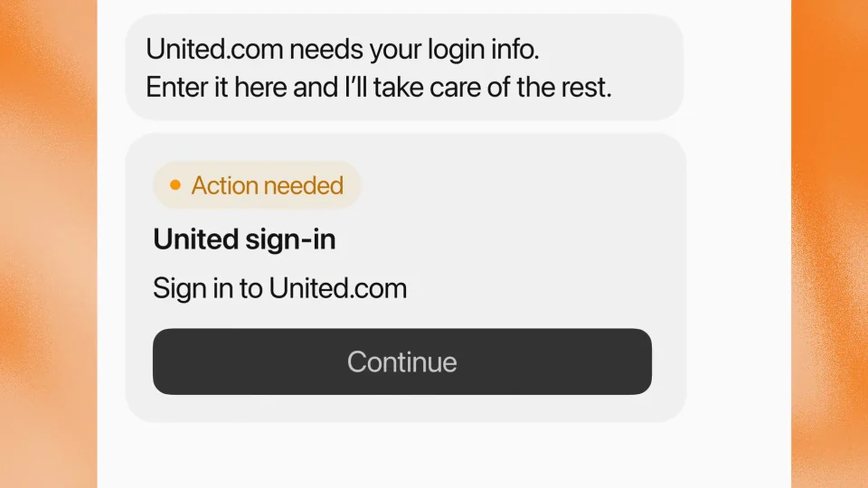
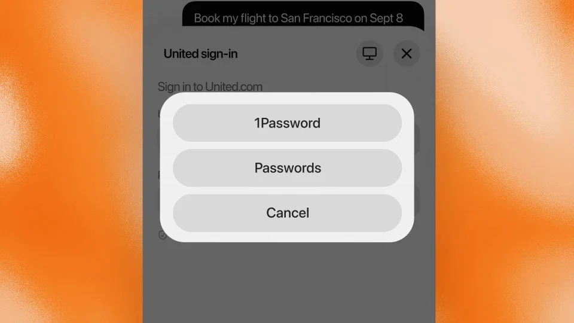
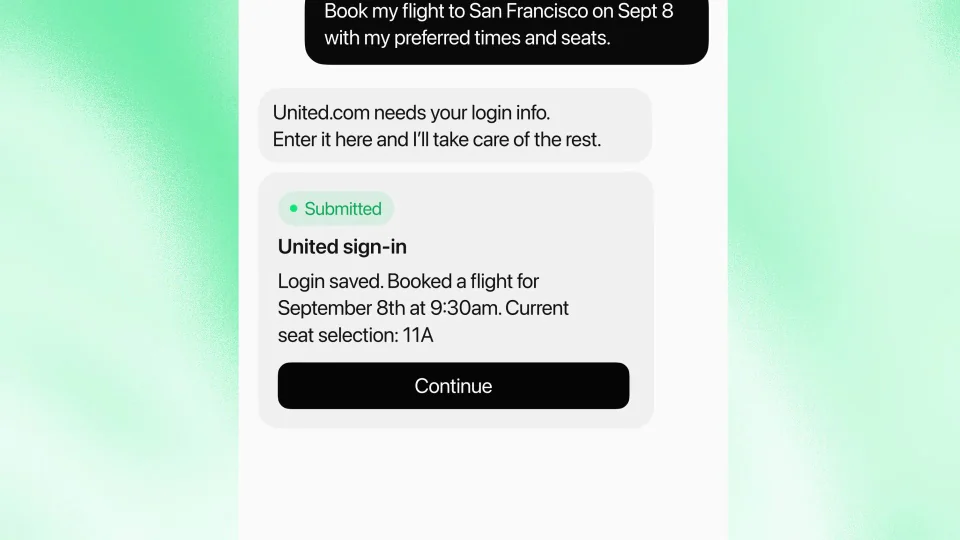

xAI / Grok / V025
Grok Bot · 对话内填表与登录
让代理在需要用户输入时停下来，得到输入后继续完成任务。等待和成功是两个有明确边界的状态。
构图与编排 可播放 · 可替换内容
整体编排规则示例
查看 HTML 源码
<!doctype html><html lang="zh-CN"><meta charset="utf-8"><meta name="viewport" content="width=device-width,initial-scale=1"><title>You can now fill out forms and logins for your Bot without ever leaving the chat, with support for any password manager. · sequence</title><style>html,body{margin:0;width:100%;height:100%;overflow:hidden;background:#fff6ee}canvas{display:block;width:100%;height:100%;object-fit:contain}</style><body data-mode="sequence"><canvas width="1000" height="600"></canvas><script src="data.js"></script><script src="common.js"></script><script src="scene.js"></script><script src="bridge.js"></script></body></html>画面元素请求待操作卡继续按钮登录表单密码管理器提交回执
MOTION LANGUAGE
动作与构图
局部动作 · 构图规则
01
橙色表示等待，绿色表示完成
白手机置于暖橙光晕里，表单文字用高对比无衬线。任务请求、待操作卡与 Continue 按钮沿竖向排列，成功回执改用绿色。
02
把认证步骤完整交给用户
把认证步骤完整交给用户规则示例
查看 HTML 源码
<!doctype html><html lang="zh-CN"><meta charset="utf-8"><meta name="viewport" content="width=device-width,initial-scale=1"><title>You can now fill out forms and logins for your Bot without ever leaving the chat, with support for any password manager. · sequence</title><style>html,body{margin:0;width:100%;height:100%;overflow:hidden;background:#fff6ee}canvas{display:block;width:100%;height:100%;object-fit:contain}</style><body data-mode="clip" data-start="4" data-end="13"><canvas width="1000" height="600"></canvas><script src="data.js"></script><script src="common.js"></script><script src="scene.js"></script><script src="bridge.js"></script></body></html>待操作卡展开成登录表单，再唤起密码管理器选项。选定后回填占位账号和掩码密码，提交动作结束后才显示成功。
03
回执回应最初那件事
成功卡概括完成的任务和关键结果。任务名、日期或对象在请求与回执之间保持一致，最后才切到品牌。
04
适配其他需要授权的工作流
可换成支付确认、资源访问或发布审批。更换表单字段和回执内容，保留暂停、用户输入、恢复执行的次序。
SEQUENCE
段落与节奏
点击段落，定位到上方编排示意。





画面参考 · 离散静帧
KEEP THE RELATIONSHIPS
制作其他主题
- 适用于需要授权的工作流；保留停下→用户确认→恢复→回执。
- 认证表单内容替换，成功态不能早于提交动作。
制作约束
请求 / 待操作卡 / 继续按钮 / 登录表单 / 密码管理器 / 提交回执
- 代理遇到认证才转给用户；用户提供输入后流程恢复。
- 橙色等待态转为绿色完成态，信息内容持续对应同一任务。
- 不得展示真实密码，迁移使用占位输入。